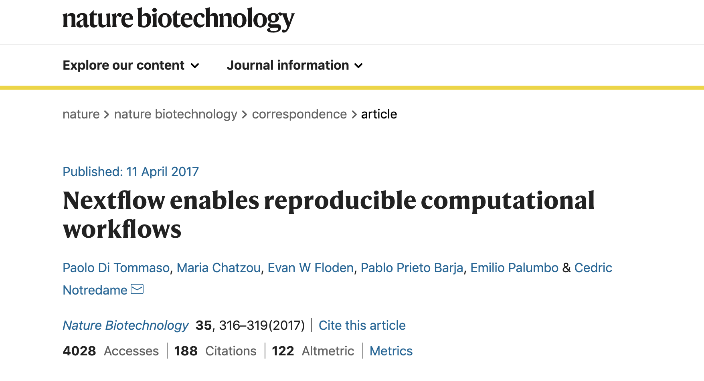

First Day
Introduction to Docker and Singularity containers.
TONI
Docker hub, BioContainers and other repositories. Find existing containers. Execute a Singularity container.
TONI
Introduction to Nextflow
A DSL for data-driven computational pipelines. www.nextflow.io.
{kind=link}
What is Nextflow?

Nextflow is a domain specific language for workflow orchestration that stems from Groovy. It enables scalable and reproducible workflows using software containers. It was developed at the CRG in the Lab of Cedric Notredame by Paolo Di Tommaso. The Nextflow documentation is available here and you can ask help to the community using their gitter channel
Nextflow has been upgraded in 2020 from DSL1 (Domain-Specific Language) version to DSL2. In this course we will use exclusively DSL2.
What is Nextflow for?
It is for making pipelines without caring about parallelization, dependencies, intermediate file names, data structures, handling exceptions, resuming executions etc.
It was published in Nature Biotechnology in 2017.
{kind=link}
There is a growing number of publications mentioning Nextflow in PubMed, since many bioinformaticians are starting to write their pipeline with Nextflow.

Here is a curated list of Nextflow pipelines.
And here is a group of pipelines written in a collaborative way from the NF-core project.
Some pipelines written in Nextflow are used for SARS-Cov-2 analysis, for example:
the artic Network pipeline: ncov2019-artic-nf.
the CRG / EGA viral Beacon pipeline: Master of Pores.
the nf-core pipeline: viralrecon.
Main advantages
Fast prototyping
You can quickly write a small pipeline that can be expanded incrementally. Each task is independent and can be easily added to other ones.You can reuse your scripts and tools without rewriting / adapting them.
Reproducibility
Nextflow supports Docker and Singularity containers technology. Their use will make the pipelines reproducible in any Unix environment. <br>Nextflow is integrated with GitHub code sharing platform, so you can call directly a specific version of pipeline from a repository, download it and use it on the fly.
Portability
Nextflow can be executed on multiple platforms without modifiying the code. It supports several schedulers such as SGE, LSF, SLURM, PBS and HTCondor and cloud platforms like Kubernetes, Amazon AWS and Google Cloud.

Scalability
Nextflow is based on the dataflow programming model which simplifies writing complex pipelines. The tool takes care of parallelizing the processes without additional written code. The resulting applications are inherently parallel and can scale-up or scale-out, transparently, without having to adapt to a specific platform architecture.
Resumable, thanks to continuous checkpoints
All the intermediate results produced during the pipeline execution are automatically tracked. For each process a temporary folder is created and is cached (or not) once resuming an execution.
Workflow structure
The workflows can be represented as graphs where the nodes are the processes and the edges are the channels. The processes are blocks of code that can be executed - such as scripts or programs - while the channels are asynchronous queues able to connect processes among them via input / output.

Processes are independent from one another and can be run in parallel depending on the number of elements in a channel. In the previous example, processes A, B and C can be run in parallel and only when they ALL end can process D be triggered.
Installation
Note
Nextflow is already installed on the machines for the training! You need at least the Java version 8 for Nextflow installation.
Tip
You can check the version fo java by typing:
java -version
Then we can install Nextflow with:
curl -s https://get.nextflow.io | bash
This will create the nextflow executable that can be moved, for example, to /usr/local/bin.
We can test that the installation was successful with:
nextflow run hello
N E X T F L O W ~ version 20.07.1
Pulling nextflow-io/hello ...
downloaded from https://github.com/nextflow-io/hello.git
Launching `nextflow-io/hello` [peaceful_brahmagupta] - revision: 96eb04d6a4 [master]
executor > local (4)
[d7/d053b5] process > sayHello (4) [100%] 4 of 4 ✔
Ciao world!
Bonjour world!
Hello world!
Hola world!
This command downloads and runs the pipeline hello. It is downloaded from the nextflow-io github repository.
ADD SOMETHING?